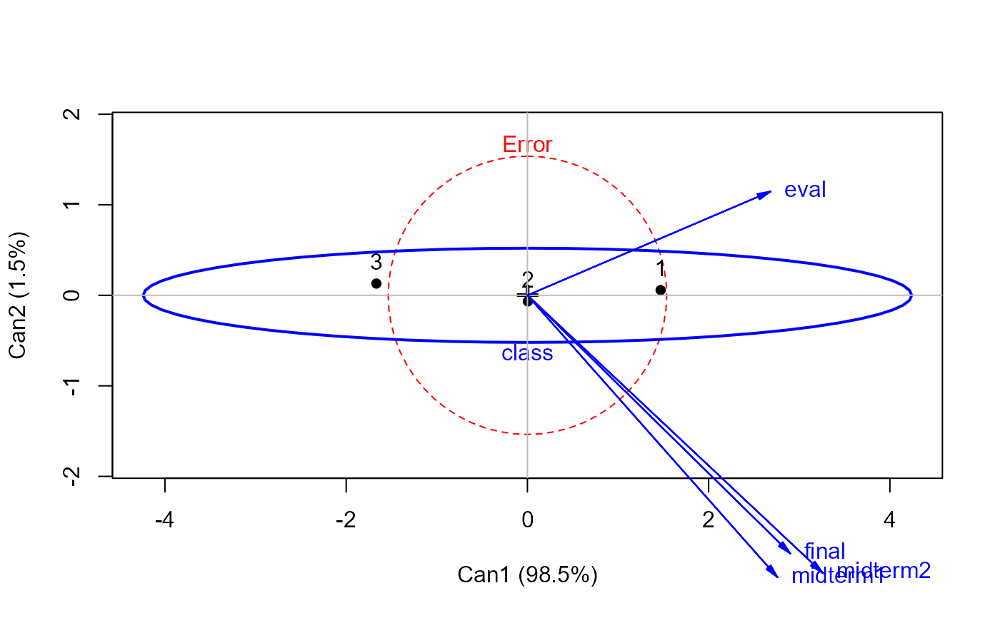
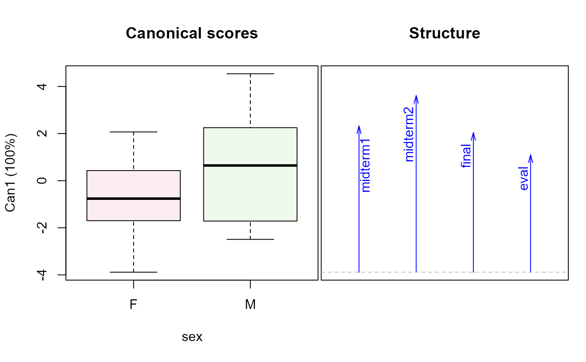

<!-- Generated by pkgdown: do not edit by hand -->
<!DOCTYPE html>
<html>
  <head>
  <meta charset="utf-8">
<meta http-equiv="X-UA-Compatible" content="IE=edge">
<meta name="viewport" content="width=device-width, initial-scale=1.0">

<title>Grades in a Sociology Course — SocGrades • heplots</title>

<!-- jquery -->
<script src="https://code.jquery.com/jquery-3.1.0.min.js" integrity="sha384-nrOSfDHtoPMzJHjVTdCopGqIqeYETSXhZDFyniQ8ZHcVy08QesyHcnOUpMpqnmWq" crossorigin="anonymous"></script>
<!-- Bootstrap -->
<link href="https://maxcdn.bootstrapcdn.com/bootswatch/3.3.7/cerulean/bootstrap.min.css" rel="stylesheet" crossorigin="anonymous">

<script src="https://maxcdn.bootstrapcdn.com/bootstrap/3.3.7/js/bootstrap.min.js" integrity="sha384-Tc5IQib027qvyjSMfHjOMaLkfuWVxZxUPnCJA7l2mCWNIpG9mGCD8wGNIcPD7Txa" crossorigin="anonymous"></script>

<!-- Font Awesome icons -->
<link href="https://maxcdn.bootstrapcdn.com/font-awesome/4.6.3/css/font-awesome.min.css" rel="stylesheet" integrity="sha384-T8Gy5hrqNKT+hzMclPo118YTQO6cYprQmhrYwIiQ/3axmI1hQomh7Ud2hPOy8SP1" crossorigin="anonymous">


<!-- pkgdown -->
<link href="../pkgdown.css" rel="stylesheet">
<script src="../jquery.sticky-kit.min.js"></script>
<script src="../pkgdown.js"></script>
  
  
<!-- mathjax -->
<script src='https://mathjax.rstudio.com/latest/MathJax.js?config=TeX-AMS-MML_HTMLorMML'></script>

<!--[if lt IE 9]>
<script src="https://oss.maxcdn.com/html5shiv/3.7.3/html5shiv.min.js"></script>
<script src="https://oss.maxcdn.com/respond/1.4.2/respond.min.js"></script>
<![endif]-->


  </head>

  <body>
    <div class="container template-reference-topic">
      <header>
      <div class="navbar navbar-default navbar-fixed-top" role="navigation">
  <div class="container">
    <div class="navbar-header">
      <button type="button" class="navbar-toggle collapsed" data-toggle="collapse" data-target="#navbar">
        <span class="icon-bar"></span>
        <span class="icon-bar"></span>
        <span class="icon-bar"></span>
      </button>
      <a class="navbar-brand" href="../index.html">heplots</a>
    </div>
    <div id="navbar" class="navbar-collapse collapse">
      <ul class="nav navbar-nav">
        <li>
  <a href="../index.html">
    <span class="fa fa-home fa-lg"></span>
     
  </a>
</li>
<li>
  <a href="../reference/index.html">Reference</a>
</li>
      </ul>
      
      <ul class="nav navbar-nav navbar-right">
        
      </ul>
    </div><!--/.nav-collapse -->
  </div><!--/.container -->
</div><!--/.navbar -->

      
      </header>

      <div class="row">
  <div class="col-md-9 contents">
    <div class="page-header">
    <h1>Grades in a Sociology Course</h1>
    </div>

    
    <p>The data set <code>SocGrades</code> contains four outcome measures on student performance
in an introductory sociology course together with six potential predictors.
These data were used by Marascuilo and Levin (1983) for an example of
canonical correlation analysis, but are also suitable as examples of
multivariate multiple regression, MANOVA, MANCOVA and step-down analysis
in multivariate linear models.</p>
    

    <pre class="usage"><span class='fu'>data</span>(<span class='no'>SocGrades</span>)</pre>
        
    <h2 class="hasAnchor" id="format"><a class="anchor" href="#format"></a>Format</h2>

    <p>A data frame with 40 observations on the following 10 variables.</p><dl class='dl-horizontal'>
    <dt><code>class</code></dt><dd><p>Social class, an ordered factor with levels <code>1</code> &gt; <code>2</code> &gt; <code>3</code></p></dd>
    <dt><code>sex</code></dt><dd><p>sex, a factor with levels <code>F</code> <code>M</code></p></dd>
    <dt><code>gpa</code></dt><dd><p>grade point average</p></dd>
    <dt><code>boards</code></dt><dd><p>College Board test scores</p></dd>
    <dt><code>hssoc</code></dt><dd><p>previous high school unit in sociology, a factor with 2  <code>no</code>, <code>yes</code></p></dd>
    <dt><code>pretest</code></dt><dd><p>score on course pretest</p></dd>
    <dt><code>midterm1</code></dt><dd><p>score on first midterm exam</p></dd>
    <dt><code>midterm2</code></dt><dd><p>score on second midterm exam</p></dd>
    <dt><code>final</code></dt><dd><p>score on final exam</p></dd>
    <dt><code>eval</code></dt><dd><p>course evaluation</p></dd>
  </dl>
    
    <h2 class="hasAnchor" id="details"><a class="anchor" href="#details"></a>Details</h2>

    <p><code>midterm1</code>, <code>midterm2</code>, <code>final</code>, and possibly <code>eval</code> are the response variables.
All other variables are potential predictors.</p>
<p>The factors <code>class</code>, <code>sex</code>, and <code>hssoc</code> can be used with
<code>as.numeric</code> in correlational analyses.</p>
    
    <h2 class="hasAnchor" id="source"><a class="anchor" href="#source"></a>Source</h2>

    <p>Marascuilo, L. A. and Levin, J. R. (1983).
<em>Multivariate Statistics in the Social Sciences</em>
Monterey, CA: Brooks/Cole, Table 5-1, p. 192.</p>
    

    <h2 class="hasAnchor" id="examples"><a class="anchor" href="#examples"></a>Examples</h2>
    <pre class="examples"><div class='input'><span class='fu'>data</span>(<span class='no'>SocGrades</span>)
<span class='co'># basic MLM</span>
<span class='no'>grades.mod</span> <span class='kw'>&lt;-</span> <span class='fu'>lm</span>(<span class='fu'>cbind</span>(<span class='no'>midterm1</span>, <span class='no'>midterm2</span>, <span class='no'>final</span>, <span class='no'>eval</span>) ~
        <span class='no'>class</span> + <span class='no'>sex</span> + <span class='no'>gpa</span> + <span class='no'>boards</span> + <span class='no'>hssoc</span> + <span class='no'>pretest</span>, <span class='kw'>data</span><span class='kw'>=</span><span class='no'>SocGrades</span>)

<span class='fu'>Anova</span>(<span class='no'>grades.mod</span>, <span class='kw'>test</span><span class='kw'>=</span><span class='st'>"Roy"</span>)</div><div class='output co'>#&gt; 
#&gt; Type II MANOVA Tests: Roy test statistic
#&gt;         Df test stat approx F num Df den Df    Pr(&gt;F)    
#&gt; class    2   1.56729  11.7547      4     30 7.322e-06 ***
#&gt; sex      1   0.55300   4.0092      4     29  0.010419 *  
#&gt; gpa      1   1.20780   8.7566      4     29 9.195e-05 ***
#&gt; boards   1   0.73142   5.3028      4     29  0.002489 ** 
#&gt; hssoc    1   0.03496   0.2535      4     29  0.905171    
#&gt; pretest  1   0.31307   2.2697      4     29  0.085881 .  
#&gt; ---
#&gt; Signif. codes:  0 <U+0091>***<U+0092> 0.001 <U+0091>**<U+0092> 0.01 <U+0091>*<U+0092> 0.05 <U+0091>.<U+0092> 0.1 <U+0091> <U+0092> 1</div><div class='input'>
<span class='no'>clr</span> <span class='kw'>&lt;-</span> <span class='fu'>c</span>(<span class='st'>"red"</span>, <span class='st'>"blue"</span>, <span class='st'>"darkgreen"</span>, <span class='st'>"magenta"</span>, <span class='st'>"brown"</span>, <span class='st'>"black"</span>, <span class='st'>"darkgray"</span>)
<span class='fu'><a href='heplot.html'>heplot</a></span>(<span class='no'>grades.mod</span>, <span class='kw'>col</span><span class='kw'>=</span><span class='no'>clr</span>)</div><div class='img'></div><div class='input'><span class='fu'>pairs</span>(<span class='no'>grades.mod</span>, <span class='kw'>col</span><span class='kw'>=</span><span class='no'>clr</span>)</div><div class='img'></div><div class='input'>
</div><span class='co'># NOT RUN {</span>
<span class='fu'><a href='heplot3d.html'>heplot3d</a></span>(<span class='no'>grades.mod</span>, <span class='kw'>col</span><span class='kw'>=</span><span class='no'>clr</span>, <span class='kw'>wire</span><span class='kw'>=</span><span class='fl'>FALSE</span>)
<span class='co'># }</span><div class='input'>
<span class='kw'>if</span> (<span class='fu'>require</span>(<span class='no'>candisc</span>)) {
        <span class='co'># calculate canonical results for all terms</span>
        <span class='no'>grades.can</span> <span class='kw'>&lt;-</span> <span class='fu'><a href='http://www.rdocumentation.org/packages/candisc/topics/candiscList'>candiscList</a></span>(<span class='no'>grades.mod</span>)
        <span class='co'># extract canonical R^2s</span>
        <span class='fu'>unlist</span>(<span class='fu'>lapply</span>(<span class='no'>grades.can</span>, <span class='kw'>function</span>(<span class='no'>x</span>) <span class='no'>x</span>$<span class='no'>canrsq</span>))
        <span class='co'># plot class effect in canonical space</span>
        <span class='fu'><a href='heplot.html'>heplot</a></span>(<span class='no'>grades.can</span>, <span class='kw'>term</span><span class='kw'>=</span><span class='st'>"class"</span>, <span class='kw'>scale</span><span class='kw'>=</span><span class='fl'>4</span>)

        <span class='co'># 1 df terms: show canonical scores and weights for responses</span>
        <span class='fu'>plot</span>(<span class='no'>grades.can</span>, <span class='kw'>term</span><span class='kw'>=</span><span class='st'>"sex"</span>)
        <span class='fu'>plot</span>(<span class='no'>grades.can</span>, <span class='kw'>term</span><span class='kw'>=</span><span class='st'>"gpa"</span>)
        <span class='fu'>plot</span>(<span class='no'>grades.can</span>, <span class='kw'>term</span><span class='kw'>=</span><span class='st'>"boards"</span>)
        }</div><div class='output co'>#&gt; <span class='message'>Loading required package: candisc</span></div><div class='input'>
</div></pre>
  </div>
  <div class="col-md-3 hidden-xs hidden-sm" id="sidebar">
    <h2>Contents</h2>
    <ul class="nav nav-pills nav-stacked">
      
      <li><a href="#format">Format</a></li>

      <li><a href="#details">Details</a></li>

      <li><a href="#source">Source</a></li>
      
      <li><a href="#examples">Examples</a></li>
    </ul>

  </div>
</div>

      <footer>
      <div class="copyright">
  <p>Developed by John Fox, Michael Friendly.</p>
</div>

<div class="pkgdown">
  <p>Site built with <a href="http://hadley.github.io/pkgdown/">pkgdown</a>.</p>
</div>

      </footer>
   </div>

  </body>
</html>
